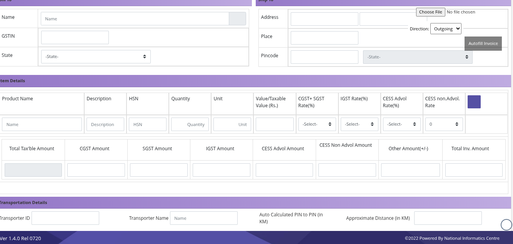

EWB Assistant
Generate E-Way Bills with Ease
Say goodbye to manual E-Way Bill generation. Our EWB Assistant takes your invoice data and automatically generates compliant E-Way Bills. This tool ensures accuracy and speeds up your logistics process, reducing potential delays and penalties. Focus on your business, and let us handle the E-Way Bills.
